ء-حماية e-Himaya
تقرير المرحلة L5: العملية البيضاء الرقمية وقراءة المخطط (L5a)، الحساسات وأبراج المراقبة والدرون للقراءة فقط [SIM] (L5b)، بطاقات النماذج ونموذج الغرق في الظل والأنشطة المقترحة ورصد الشذوذ (L5c)، وكاشف النار والدخان 3.0.0 (L5d)؛ ومعها نقل الأعوان (R3) والعدّاد واستيراد JSON (R4)
1. أين تقع هذه المرحلة من مسار المشروع
التبليغ
←
المعالجة
←
التحليل
←
مؤشرات الأداء KPI
←
التنبؤ بالذكاء الاصطناعي
←
اتخاذ القرار
- التبليغ: مصادر جديدة غير المواطن، الحساسات وأبراج المراقبة والدرون، تصل اقتراحاتٍ لا بلاغاتٍ آلية.
- المعالجة ومؤشرات الأداء: العملية البيضاء تقيس زمن قبول البلاغ وزمن الرد ونقص الموارد عند الذروة، ومتابعة مهام المخطط.
- التنبؤ: نموذج الغرق في الظل، والأنشطة المقترحة من الطقس والموسم، ورصد ما خرج عن المعتاد؛ وبطاقة لكل نموذج تقول أين يخطئ.
- اتخاذ القرار: كل اقتراح بوسم الذكاء الاصطناعي ومفتاح إيقاف وتدقيق؛ والعتبات لا تُعتمد إلا بمحضر اللجنة (AI-01).
2. مراجعة ← تصميم ← تطوير
الطلب: البنود 2 و3 و5 و7 و9 بمعطيات تجريبية مع تقرير، ونقاط الذكاء الاصطناعي AI2 إلى AI4. قال يامن إن التمرين «في العمليات الميدانية تسمى عملية بيضاء، وهذه رقمية لمعرفة نجاعة التطبيقة من حيث العدد الهائل من البلاغات، ثم من ناحية الموارد»، وإن مدير النظام هو من يفعّلها، ونبّه إلى «حقن SQL لغاية تعطيل أو سرقة معطيات». ووافق على طريق الحساسات عبر بوابة على خادم MediaMTX، وعلى الدرون للقراءة فقط ما دام نوعها غير معروف. ثم طلب إعادة تدريب كاشف النار على بطاقة NVIDIA بجهازه (L5d)، وفوّض القرار: «اجعل نفسك مكاني في أخذ القرار».
الأمن: التمرين لا يصل إلى مواطن ولا إلى الإحصائيات ولا يحجز موردا حقيقيا، والضغط الأقصى والحمولات الهجومية على النسخة المعزولة وحدها؛ كل كتابة وقراءة بطلبات مُعلَّمة، وفحص آلي يرفض SQL مركّبا من نص، وحدود لعدد الحقن وإيقاعها ومدتها. الأجهزة على الشبكة المحلية وحدها، والقراءة غير الموقّعة تُرفض، والمفاتيح مشفّرة تُعرض مرة واحدة ولا تُكتب في أي سجل. لا طريق ولا مكتبة لأمر الدرون، واختبار دائم يفشل لو ظهر. قراءة المخطط تعامل نص الملف معطياتٍ لا تعليمات، وتتحقق من الصفحة والاقتباس. الوالي والوزير يقرآن مهام المخطط دون أسماء، ولا يرون الطبقات الحساسة.
L5a: العملية البيضاء الرقمية وقراءة المخطط (AI2)
- يمنح مدير النظام عناصرها من «الصلاحيات»، وهي محجوبة عن الجميع افتراضيا؛ وزر الإيقاف لا يُحجب عن رئيس قاعة مشاركة.
- التخطيط والسيناريو بحقن مؤرّخة بالدقيقة وجوابها المنتظر والموارد المطلوبة بالعدّاد؛ موافقة كل ولاية أو رفضها بسبب.
- التنفيذ في مسار كهرماني، بحجز موارد داخل التمرين وحده؛ ونتيجة اختبار الحمل (
drill.js) من النسخة المعزولة.
- التقييم بالحقنة والتقرير: زمن الرد، نقص الموارد عند الذروة، الحمولات المرفوضة.
- «مهام المخطط» في المحور والتمرين: النموذج المحلي يقترح، ورئيس القاعة يراجع مهمة مهمة ثم يعتمد ويتابع.
L5b: الحساسات والأبراج والدرون [SIM]
- بوابة
sensor-gateway على خادم MediaMTX: قراءات موقّعة، طابور أثناء الانقطاع، محاكي سيناريوهات.
- الحساسات بعتبتي الانتباه والإنذار ومدة الصمت، والتجاوز اقتراح في مركز التنبيهات؛ وطبقة في الخريطة.
- أبراج المراقبة: برنامج الحافة المرجعي يشغّل الكاشف ويؤكد 3 إطارات من 5، والحدث اقتراح لا بلاغ.
- الدرون: الموقع من KLV عبر SRT الداخلي، ومناطق العمل والحظر وأربعة تنبيهات، ومحاكي مسار بدل SITL.
L5c و L5d: بطاقات النماذج والاقتراحات والكاشف 3.0.0
- ست بطاقات بالشكل نفسه وبثلاث لغات، والأخطاء حسب الظروف (للنار) وحسب اللغة (لقراءة البلاغ)، و«عيّنة صغيرة» دون 30، واعتماد اللجنة بمرجع المحضر.
- نموذج الغرق (انحدار لوجستي) في الظل: AUC 0.828 مقابل 0.812 للقواعد على أيام [SIM].
- الأنشطة المقترحة (AI3) ورصد الشذوذ (AI4) إحصاءً معلَّلا بالأرقام، لا نموذجا لغويا.
- الكاشف 3.0.0: استدعاء النار 0.87 ← 0.96 بنفس الدقة (0.68 ← 0.69)، والدخان معايَر على مستوى إنذارات 2.0.0 الكاذبة.
R3 و R4
- نقل الأعوان بين الولايات (إرسال، قبول بوحدة جديدة، رفض، إلغاء)، وأصناف جديدة في الكتالوج.
- العدّاد (− قيمة +) بدل الأرقام المكتوبة في اللوحة وتطبيق الهاتف، واستيراد JSON بربط الأعمدة الأجنبية.
3. لقطات [SIM]
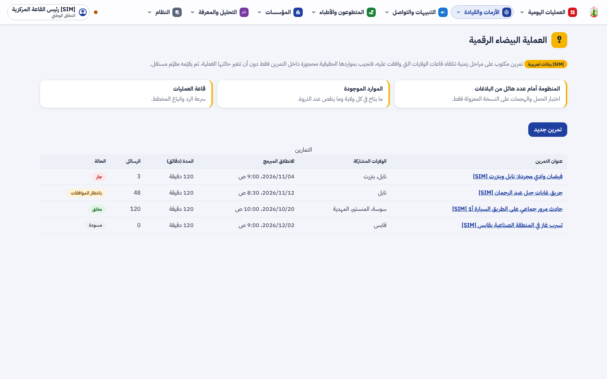
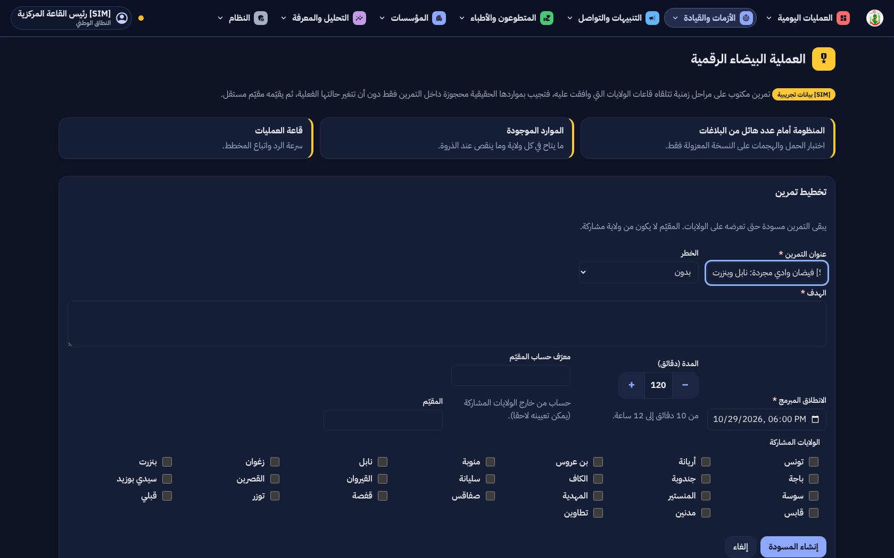
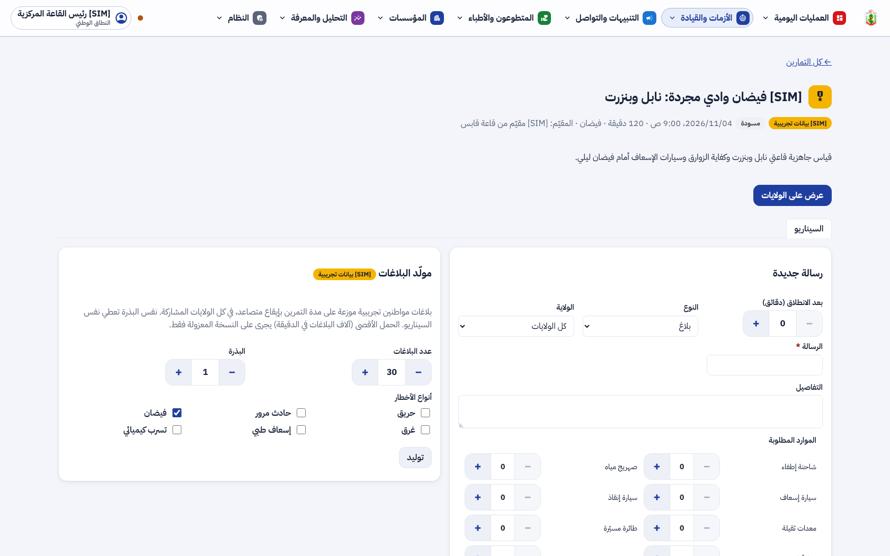
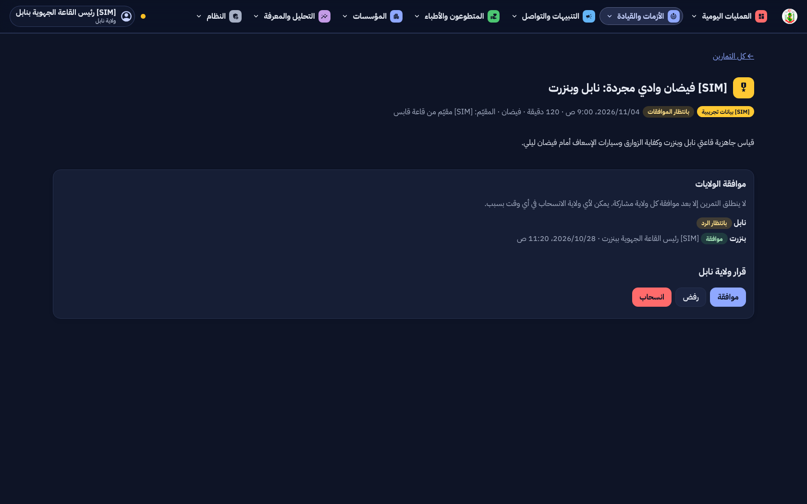
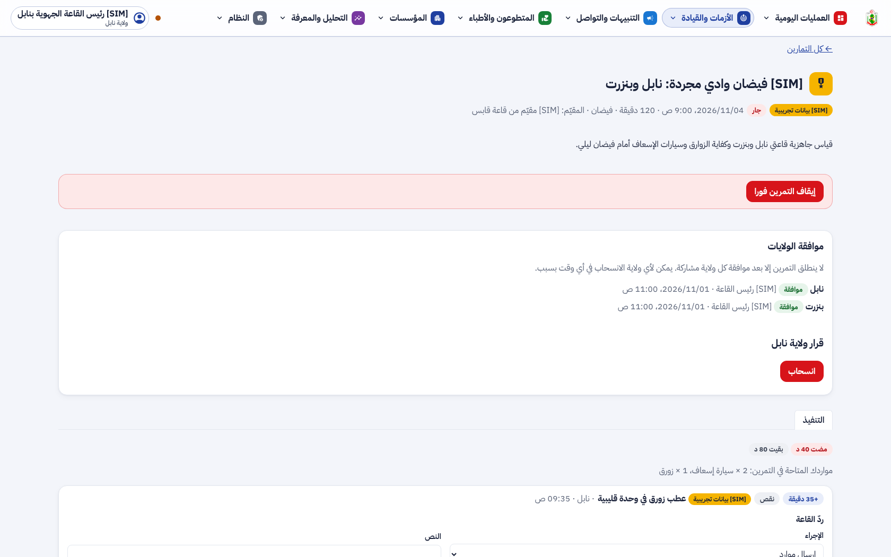
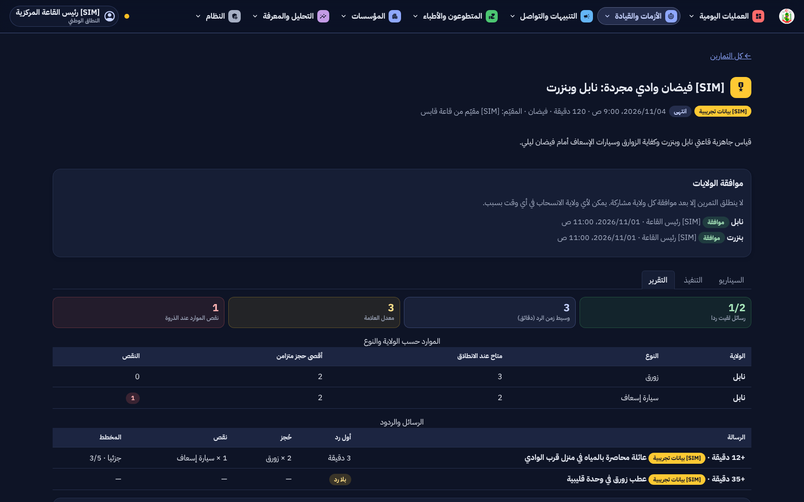
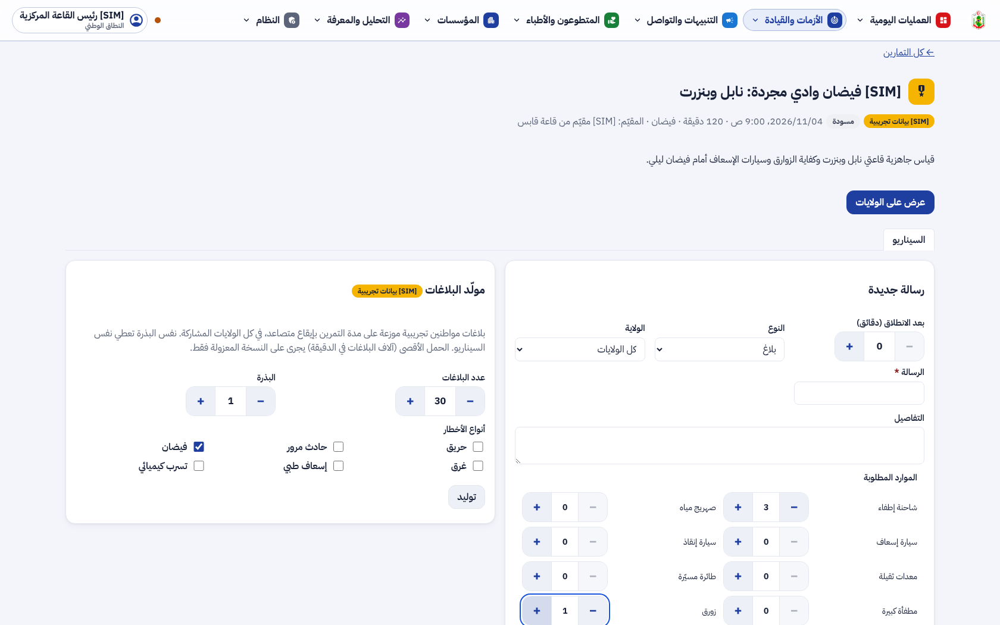
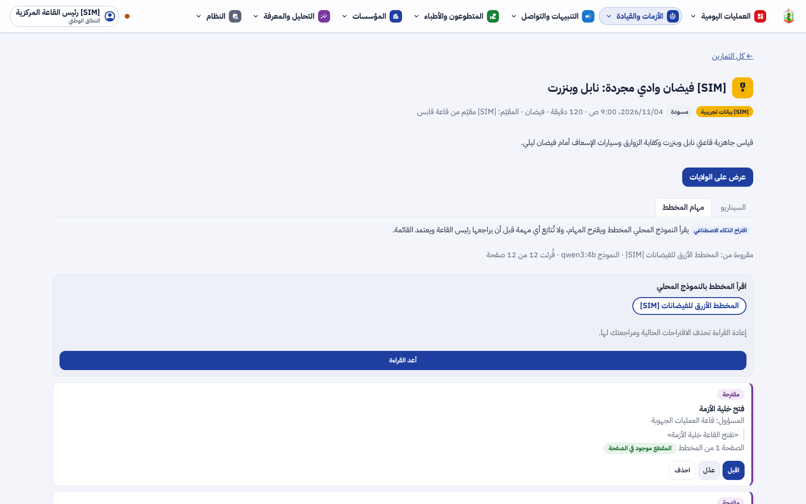
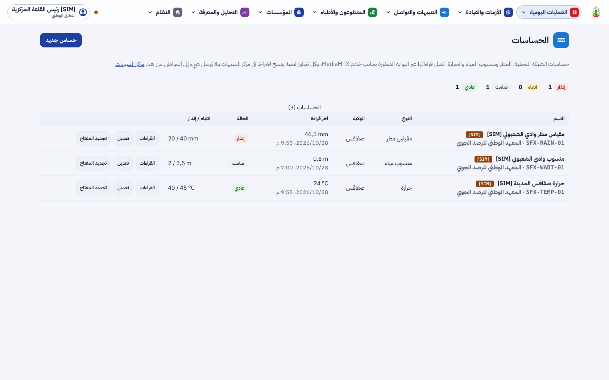
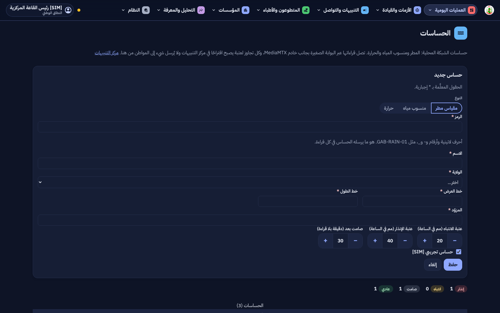
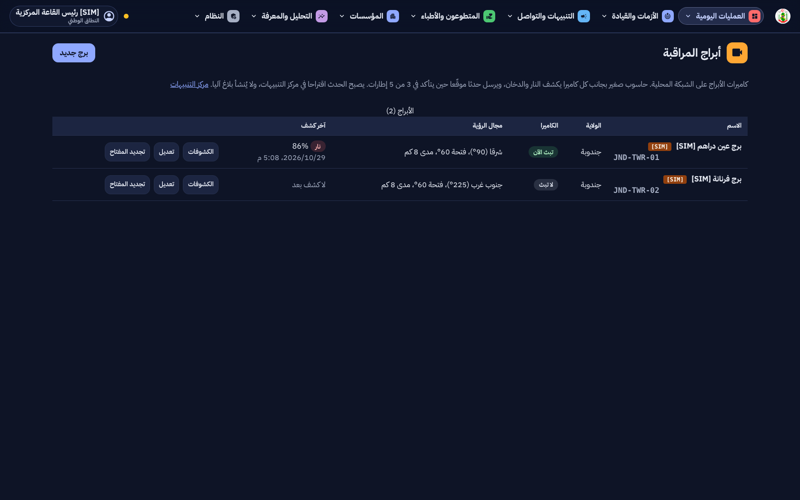
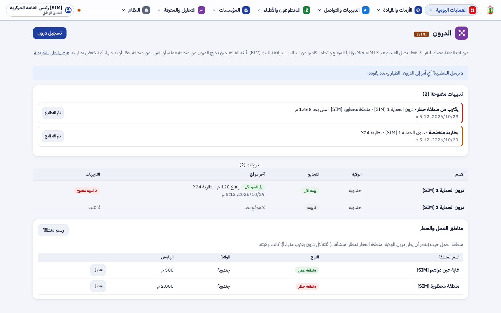
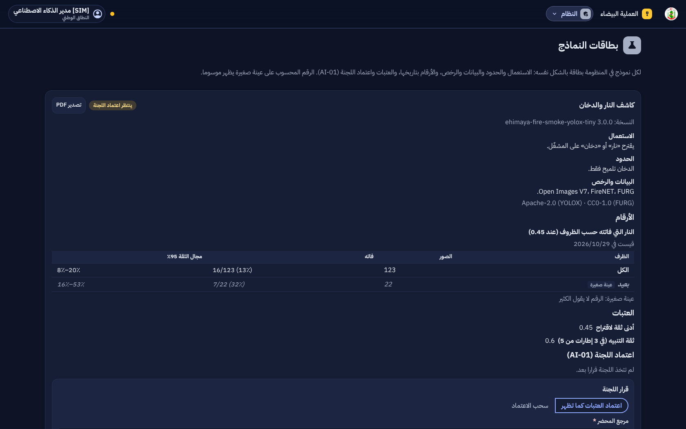
4. التقدم لكل جزء
| البند | الحالة | التقدم |
|---|
| F-DSH-87 و 88 العملية البيضاء الرقمية | منجز (L5a) |
|
| F-DSH-89 مهام المخطط (AI2) | منجز (L5a) |
|
| F-DSH-90 إلى 92 الحساسات والأبراج والدرون | منجز بمعطيات [SIM] (L5b) |
|
| F-DSH-93 بطاقات النماذج ونموذج الغرق في الظل | منجز (L5c) |
|
| F-DSH-94 الأنشطة المقترحة ورصد الشذوذ | منجز (L5c) |
|
| F-SRV-05 كاشف النار والدخان 3.0.0 | منجز جزئيا حتى التجربة الميدانية (L5d) |
|
| F-DSH-95 و 96 نقل الأعوان، العدّاد، استيراد JSON | منجز (R3 و R4) |
|
| F-SRV-33 إلى F-SRV-40 | منجز |
|
| الأجهزة الحقيقية (DRN-01 و SNS-01) | التجربة الميدانية |
|
| الربط بـ Oracle (R4) | مؤجل |
|
تقدم المرحلة L5: 100%. التالي: التجربة الميدانية في ولاية واحدة بالأجهزة الحقيقية، بعد قرارات الديوان.
5. المحاكاة [SIM]
- [SIM] التمارين والحقن والولايات والمقيِّمون والموارد في اللقطات مختلَقة للعرض.
- [SIM] الحساسات والأبراج والدرونات وقراءاتها ومساراتها من المحاكيات (البوابة
simulate، ومحاكي مسار KLV، وفيديو مسجَّل للبرج).
- [SIM] نموذج الغرق مدرَّب ومقيس على أيام محاكاة؛ وقراءة البلاغ مقيسة على 60 بلاغا محاكى.
- أرقام كاشف النار 3.0.0 حقيقية، على 383 صورة تقييم معلنة، ووسوم الظروف بالعين لم تُراجَع بعد.
6. الاختبارات المطبقة
| المكوّن | العدد | النتيجة |
|---|
| الخلفية (pytest) | 1033، منها العملية البيضاء وأمنها، والحساسات والأبراج والدرون، ومهام المخطط، والبطاقات، والاقتراحات، والشذوذ | ناجحة في CI |
| الترحيلات | صعودا ونزولا ثم صعودا حتى 0075 | ناجحة |
| لوحة القيادة (vitest) | 585 | ناجحة |
| لوحة القيادة (Playwright مع axe) | 93، منها العملية البيضاء والحساسات والدرون وبطاقات النماذج | ناجحة، دون أي مخالفة |
| الخدمات المساعدة | حوالي 205، منها قارئ KLV وبرنامج الحافة والبوابة | ناجحة |
| قياس قراءة البلاغ بالنموذج الحقيقي (qwen3:1.7b) | 60 بلاغا [SIM] | حياة في خطر أُغفلت في 6 من 37؛ الدارجة 5 من 13، والدارجة بالحروف اللاتينية 3 من 5 |
| CI على #134 | 27 فحصا | كلها ناجحة |
- الدرون:
tests/test_drones.py يفشل إن ظهر طريق درون غير طرق القراءة أو أسماء أوامر MAVLink أو مكتبة قيادة.
- العملية البيضاء: لا شيء من التمرين في الإحصائيات أو الإشعارات؛ الإيقاف متاح لرئيس قاعة مشاركة؛
drill.js يرفض الانطلاق دون ISOLATED=yes.
- الحساسات والأبراج: القراءة غير الموقّعة أو من عنوان خارج الشبكة المحلية مرفوضة، والمفتاح لا يعود في أي جواب بعد عرضه الأول.
- مهام المخطط: الاقتباس غير الموجود في صفحته موسوم، والقائمة لا تُعتمد ما دامت مهمة دون مراجعة.
8. المخرجات المحيَّنة
- الملف الوصفي V25 (docx و pdf) في
spec/: F-DSH-87 إلى 96، F-SRV-33 إلى 40، القواعد BR-18 إلى BR-20، القرارات الخارجية DRN-01 و SNS-01 و AI-02، 555 مسارا و667 عملية، 33 مخططا و197 جدولا و75 ترحيلا، الاختبارات، وخارطة الطريق.
- مخططات UML في
diagrams/: ثلاثة مخططات أصناف (28 العملية البيضاء ومهام المخطط، 29 الأجهزة، 2a الذكاء الاصطناعي)، وخمسة تسلسلات (71 إلى 75)، وحالات العملية البيضاء (76)، وحالات الاستعمال S64 إلى S69.
- العرض للمسؤولين في
presentation/: 45 مرحلة، الكاشف 3.0.0، الاختبارات، وخارطة الطريق.
- مرجع التصميم أعيد توليده بأيقونات L5 (الدرون والحساسات والأبراج): design-reference.html.
- سجل الإصدارات، القائمة المؤجلة (§3.8)، دليلا التنصيب (الترحيلات 0066 إلى 0075، البوابة، الشبكة المحلية)، واللقطات في
phase-l/.
9. ملاحظات وانحرافات
- محاكاة الدرون بمحاكي مسار يمر بترميز KLV وفكّه بدل ArduPilot SITL، لأن SITL يحتاج بروتوكول قيادة لا مكان له في المنظومة.
- قراءة البلاغ بالدارجة، خاصة بالحروف اللاتينية، أضعف نقطة في بطاقات النماذج؛ معجم الدارجة يُعدّ في خيط مستقل.
- معايرة الدخان في 3.0.0 على مستوى الإنذار الكاذب لـ 2.0.0 لا على دقة 0.80، لأن الأخيرة تضاعف الدخان الكاذب.
- AP50 على مجموعة FURG انخفض (0.549 ← 0.157) بسبب شكل الصناديق في D-Fire، بينما ارتفع استدعاء الإطارات، وهو ما تقرره الخدمة.
- إصلاحات تصميم ظهرت في لقطات نهاية المرحلة: صفحتا بطاقات النماذج ومهام المخطط كانتا أعرض من الشاشة (عنوان مخفي يأخذ العرض كله)، وحقول نماذج L5 بلا نسق التصميم، وأزرار الصفوف تكسر خطوط الجداول.
- التمرين «غير المعلن» بقي سؤالا مفتوحا للديوان، والربط بـ Oracle مؤجل.
10. ما يلي
دمج هذا التحيين، ثم قرارات الديوان (DRN-01 و SNS-01 و AI-01 و AI-02 و FLD-01) قبل التجربة الميدانية في ولاية واحدة بالأجهزة الحقيقية.